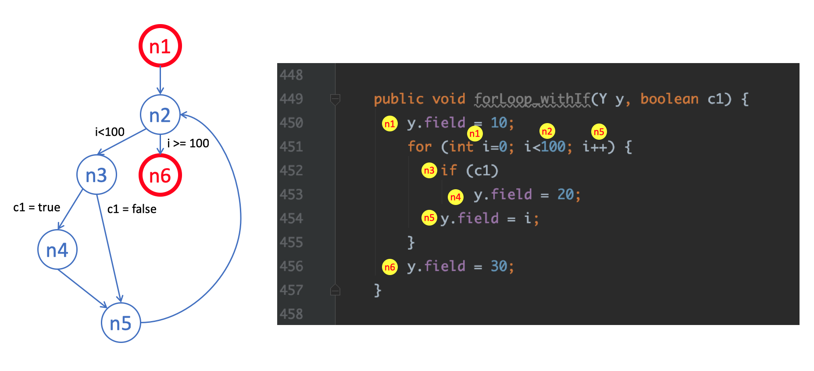

Lab 3 Test Design Techniques (Graph Coverage)
Lab Objective:
This lab aims to help students learning the concepts and practicing the skills of
test case design using basis path and graph
coverage.
1. SUT Description:
Similar to Lab1, the project to be tested for this lab is
Geo, an open source Java framework for geohashing.
Please keep developing new test code in your Lab 1 repository which should already been created on
GitLab, DO NOT create or fork another new repository in this lab.
2. Test Environment
The test environment will be IntelliJ
IDEA.
You should import the project which forked and add all the libraries
imported by gradle. Also, you need to use JUnit4 as your unit testing
framework.
3. Test Suite Generation
You are required to
to design and implement unit tests for the following classes
using basis path and
graph coverage for source code to increase the
statement and branch coverage of the tests in Lab1/Lab2.
Take a minute to browse the API specifications of each of these classes in Javadoc.
4. Test Plan
To begin with, a plan must be created. Document this
test plan, as it will be included with your lab report. This plan should include
a brief description about the requirements of the test (such as the goal of
statement or branch coverage), the strategy and activities you plan to perform to meet the
requirements, the approach to achieve the goal by designing the test
cases with Graph Coverage technique (such as node, edge, basis path, prime-path,
all-def, all-use, complete path), and the success criteria of completing the test (such as
satisfying the statement or branch coverage goal). (one page would be sufficient for the test plan)
Carry out your test plan. To keep your workload manageable, we would like you to create test cases for 6 out of 50 methods (38 methods of com.github.davidmoten.geo and 12 methods of com.github.davidmoten.geo.mem). Choose 6 methods to test and create test cases for them. Some of the chosen methods (3/6 methods) can be the same as those selected in Lab1 or Lab 2. Try to keep each test case in a separate JUnit test method if possible.
In this lab, both statement and branch coverage must be achieved at least 90%.
5. Lab Report
The Lab report must include (but not limit to) the following sections:
Test Plan: briefly describe test requirements, planed test activities, approach, and success criteria for the test.
Test Design : for the method under test
(MUT), using basis path or graph
coverage for source code to design test cases. In addition to test
inputs and expected outputs , you have to provide the details of the test
case design using the templates. Note that, you need to provide the
CFG and corresponding
test paths for each MUT. A test case
design template for Graph Coverage can be downloaded
here.
The figure below is an example of CFG. Please note that you must label the conditions
on the CFG and show the blocks of corresponding statements in source code.

Test Result: for each method under test (MUT), provide the test results (in terms of Pass/Fail or screenshots for each test case associated with the method under test.
Test Coverage: provide statement and branch code coverage for each method under test and the overall statement and branch coverage for the test.
The Coverage Comparison of your Lab1, Lab2 and Lab3, including statement and branch coverage analysis.
The screenshots of CI/CD -> Pipelines and 3 or more of you different CI status.
You can reference the sample report here.
Please convert your Lab report to .pdf file, .docx file will not be accepted.
The Lab report and ISP test case design document must be put in the corresponding directory in your project (e.g. GeoProject -> LabReport -> Lab3).
Make sure you have pushed your code and Lab report on the
GitLab successfully.